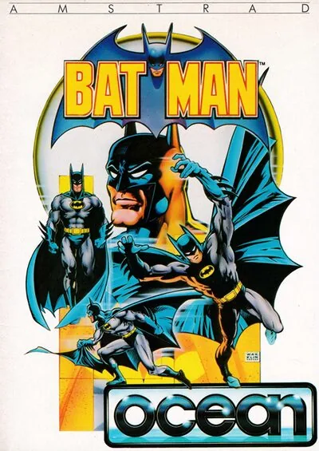
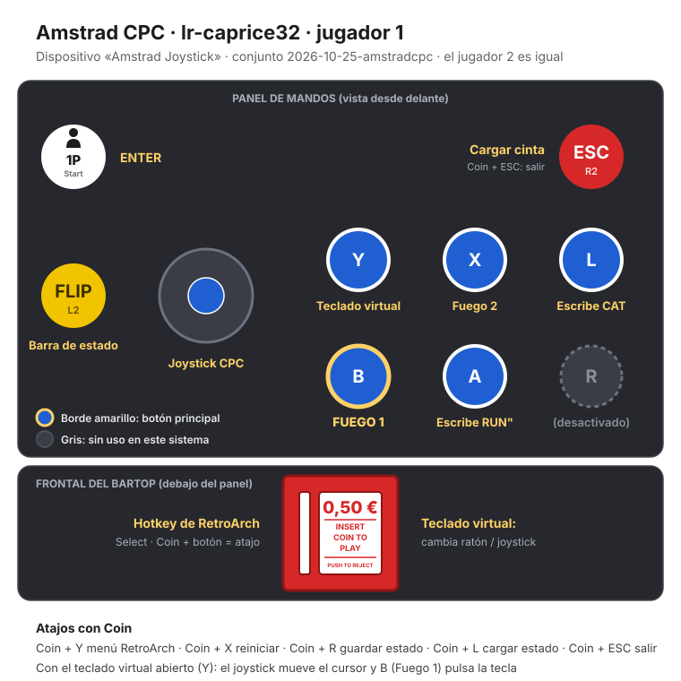

Amstrad CPC
Batman
- Año: 1986
- Desarrollador: Ocean (Jon Ritman y Bernie Drummond)
- Género: Aventura / Isométrica
- Jugadores: 1 jugador
Robin ha sido secuestrado y Batman tiene que rescatarlo. Para ello debe encontrar las siete piezas del Batcraft, un aerodeslizador, repartidas por las salas de la Batcueva, vistas en perspectiva isométrica.
Al principio Batman no puede ni saltar: primero tiene que encontrar su equipo. Las botas le dejan saltar, la bolsa le permite llevar objetos, el propulsor le deja moverse mientras cae y el cinturón hace que caiga más despacio. Por el camino hay enemigos, trampas y salas que son pequeños rompecabezas.
Es uno de los primeros juegos de Jon Ritman y Bernie Drummond, que después harían Head Over Heels.
Controles
Con el ajuste de teclas de este juego (algunos botones pulsan teclas del Amstrad). Al empezar pregunta «INFINITE LIVES (y/n)»: X = sí, A = no. En el menú, el joystick mueve el cursor y 1P elige; en «SELECT THE KEYS» elige joystick. Al principio Batman no puede saltar ni coger cosas: necesita encontrar las botas y la bolsa.
| Panel | Juego |
|---|---|
 | Mover a Batman · mover el cursor del menú |
 | Saltar · coger y soltar |
 | ENTER: elegir en el menú |
 | Tecla «y» (vidas infinitas: sí) |
 | ESPACIO |
 | Teclado virtual (tecla F9). Pulsa Coin para activar el puntero; el joystick lo mueve y B pulsa la tecla |
 + +  | Salir del juego |
El panel en Amstrad CPC


Longplay

Partida completa de la versión Amstrad CPC (29 min), de Absolute Longplay: Batman Amstrad CPC Longplay.